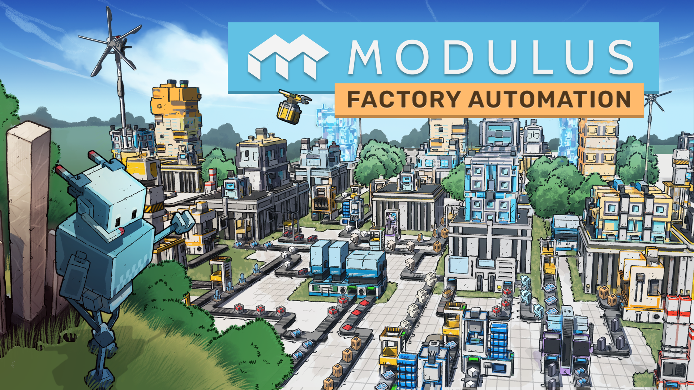

Internship Project

Happy Volcano is a Belgian indie studio behind You Suck at Parking and The Almost Gone. During my final-year internship, I joined their team as a programmer on Modulus, a factory automation game with resource management, progression systems and a zen-like building loop. I had no experience with factory games going in which was part of why I applied.
Over four months I shipped features across gameplay systems, editor tooling, and UI, working within a real agile pipeline with daily standups, sprint planning, merge request reviews, and milestone playtests.
Graphic that
generated a mesh from scratch. The tech tree made it into the publisher build.StreamingAssets/ and swapping serialized VideoClip references for path
strings.[LocaKey] custom attribute for use in ScriptableObjects outside
MonoBehaviour contexts. This tool improved the QOL for the whole team.
Unity editor scripting, ScriptableObject architecture, persistent save systems, UI mesh generation, and how to navigate a codebase I didn't write.
I learned to ask for a kickoff meeting before touching a feature. Early in the internship I implemented the Datashards system without consulting the team. There was already a foundation in place. That was extra work a fifteen-minute conversation would've prevented.
The feedback that stuck with me most came from Oliver, one of the senior developers. During an MR review he told me "The perceived complexity of a feature should increase the deeper you go into the code. The entry point should read like a table of contents.". I try to stick to this principle as much as I can now, and red flags start to raise when my code starts to get complicated. I finished the internship more confident working in large codebases, more communicative, and clearer about the kind of developer I want to be.